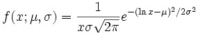
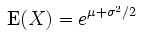
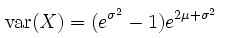
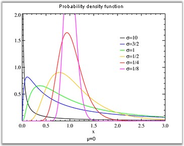

In probability and statistics, the log-normal distribution is the probability of distribution of any random variable whose logarithm is normally distributed (the base of the logarithmic function is immaterial in that loga x is normally distributed if and only if logb X is normally distributed). If x is a random variable with a normal distribution, then exp(X) will have a log-normal distribution.
"Log-normal" can also be written as "log normal", "lognormal" or "logistic normal".
A variable might be modeled as log-normal if it can be thought of as the multiplicative product of many small independent factors. A typical example of this is the long-term return rate on a stock investment: it can be considered as the product of the daily return rates.
The log-normal distribution has a probability density function (pdf),

for x > 0, where µ and s are the median and standard deviation of the variable's logarithm. The expected value is,

and the variance is,


Figure 346: Normal Distribution Density
Using the formula
|
Method Name |
Parameters |
Return Value |
|
NormalDistributionDensity |
1. x: the value at which the distribution density is evaluated. 2. m: the expected value of distribution. 3. sigma: the variance of distribution. |
A double that represents the Normal Distribution Density function value. |
Example
Here is a code snippet that shows a sample usage.
|
[C#]
using Syncfusion.Windows.Forms.Chart.Statistics; double result = UtilityFunctions.NormalDistributionDensity(x, m ,sigma); |
|
[VB.NET]
Imports Syncfusion.Windows.Forms.Chart.Statistics Dim double as result = UtilityFunctions.NormalDistributionDensity(x, m ,sigma) |